Pharmacies across Ireland and the UK operate on fragmented, manually maintained stock records. Transaction data is logged meticulously but used exclusively for billing, never for forward planning. The result is chronic dual failure: overstocking of slow moving medicines that expire on shelves and stockouts of critical medications patients depend on daily.
The brief was to design a business intelligence platform that could transform existing transaction data into actionable forecasting insight, shared simultaneously across wholesale distributors, pharmacy supervisors and clinical operations managers.
Before designing any screens, I mapped the full system stakeholders, data sources, core problems and feature opportunities to understand where design could create the most leverage.
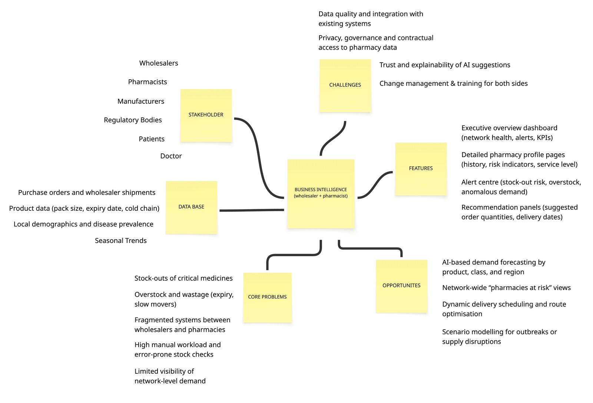
System mind map — mapping stakeholders (wholesalers, pharmacists, manufacturers, patients), core problems (stockouts, fragmented systems, manual workload), and opportunities (AI forecasting, network-wide views, dynamic delivery scheduling).
This reframe was the most significant design decision of the project. The original brief pointed toward a single pharmacy stock management tool. Three stakeholder interviews revealed that supply chain pressure originated upstream. Designing for one shelf meant designing for one symptom. Designing for the distribution layer meant addressing the systemic cause.
Three distinct users interact with Pharmasight. Each has fundamentally different goals, constraints, and mental models — requiring separate interface layers within the same platform.
James (wholesale coordinator) starts his morning the same way he always does — checking what needs attention.
Clicks Schedule Delivery. AI quantities carry over automatically. No re-entry, no second-guessing.
Edits a quantity. The confidence score and profit impact update in real time — he can see the trade-off of every change before committing.
The dashboard gives the wholesale coordinator real-time network overview like monthly volume, active partners, critical alerts and pending deliveries. Network demand trends chart actual vs AI-predicted demand. Regional distribution map shows pharmacy health status by location.
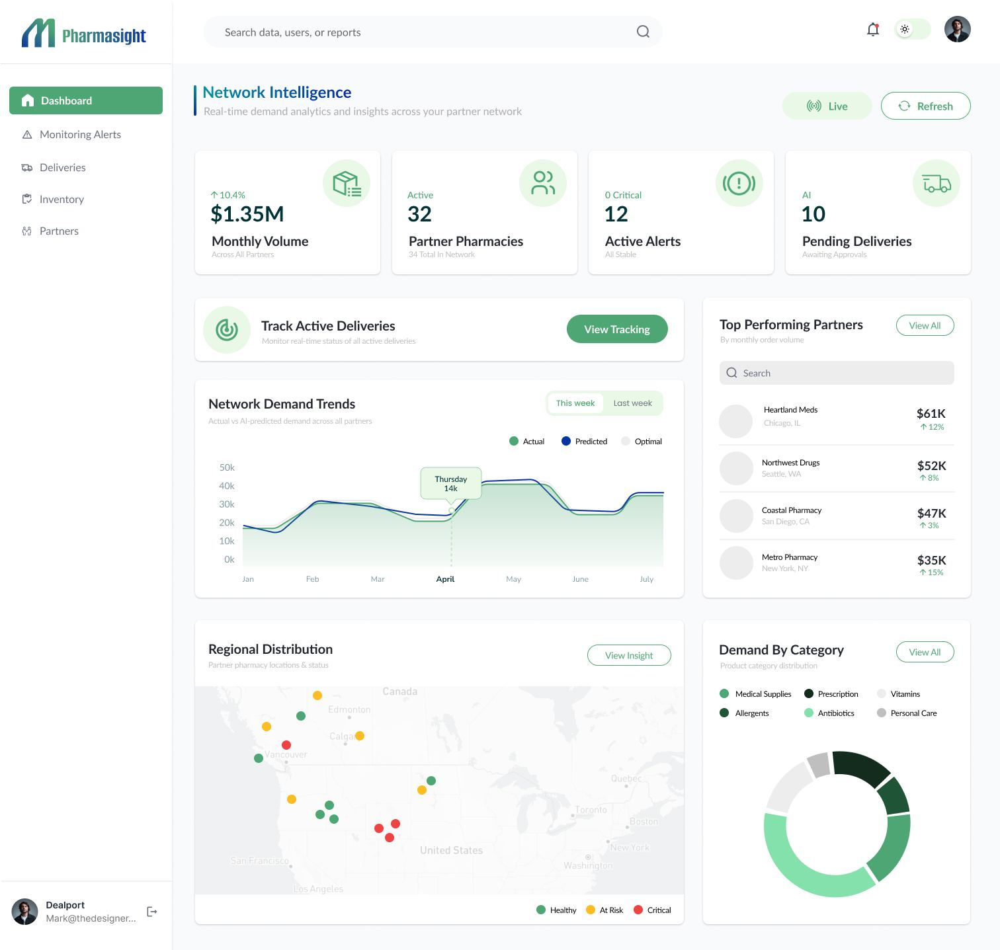
Network Intelligence Dashboard — $1.35M monthly volume across 32 active partners, 12 active alerts (0 critical), 10 AI-pending deliveries. Network demand trend (actual vs AI-predicted vs optimal), regional distribution map (green/at-risk/critical), top performing partners, demand by category.
The pharmacy supervisor's primary view. Critical information surfaces at a glance — no extra clicks needed. AI Optimisation Suggestions appear inline with each pharmacy card, making every recommendation immediately actionable with full profit impact shown.
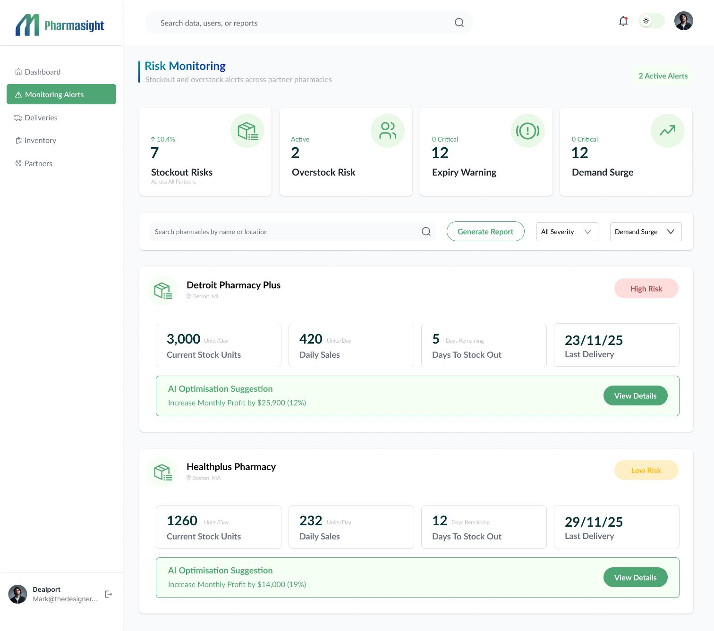
Risk Monitoring — 7 stockout risks · 2 overstock risks · 12 expiry warnings at top level. Detroit Pharmacy Plus (High Risk): 3,000 units, 420 daily sales, 5 days to stockout, AI suggests +$25,900 profit. Healthplus Pharmacy (Low Risk): 1,260 units, 232 daily sales, 12 days remaining, AI suggests +$14,000.
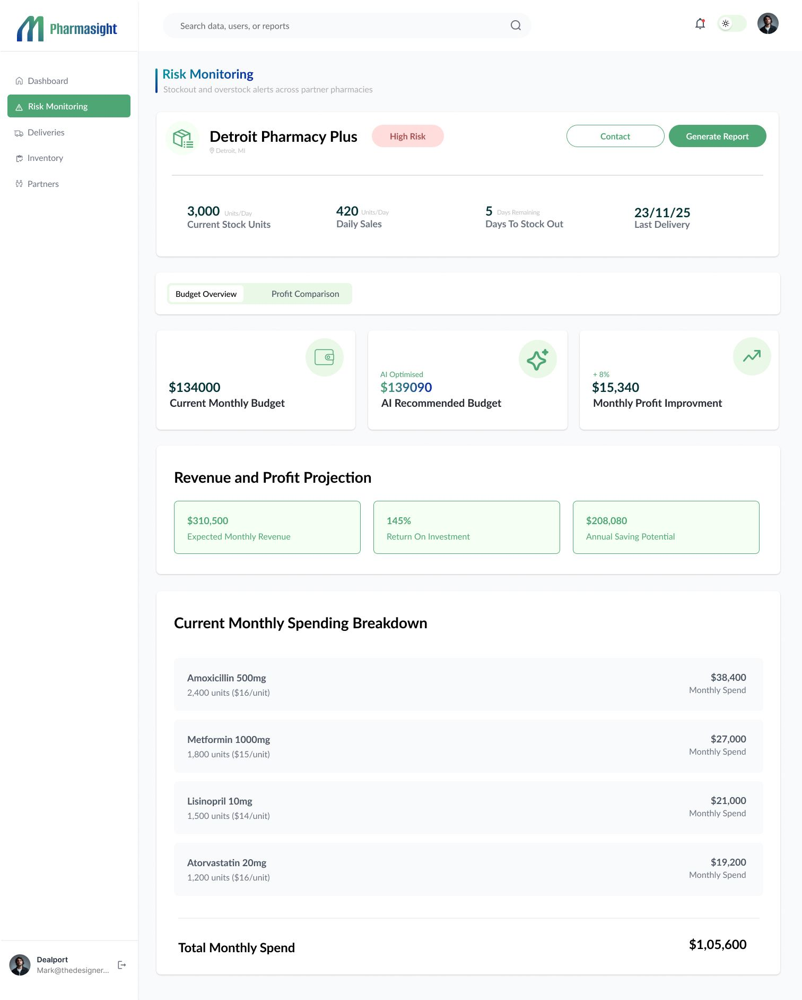
Current monthly budget $134,000 · AI optimised recommendation $139,090 · +$15,340 monthly profit improvement · 145% ROI · $208,080 annual saving potential. Revenue and profit projection with full monthly spending breakdown by product.
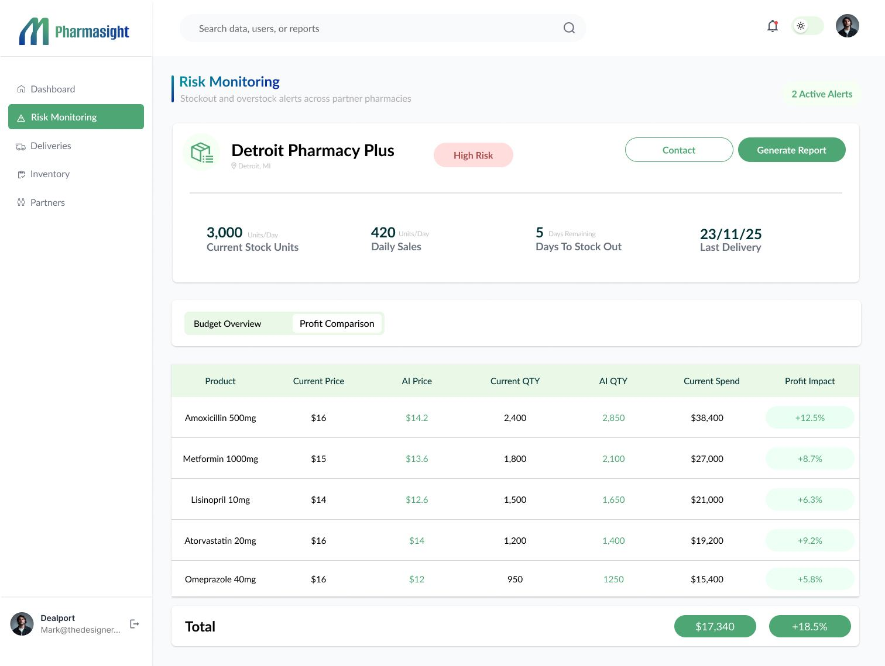
Per-product view: current price vs AI price, current quantity vs AI-recommended quantity, and profit impact % per line. Every recommendation is auditable — James can show this table to any pharmacy partner to justify the suggested order.
Pending deliveries show AI confidence scores alongside plain-language reasoning. Detroit Pharmacy Plus (90% confidence): routine 14-day replenishment recommendation. Healthplus Pharmacy (81%): critical insulin shortage — 3 days supply remaining, high-priority delivery flagged to prevent patient care disruption.
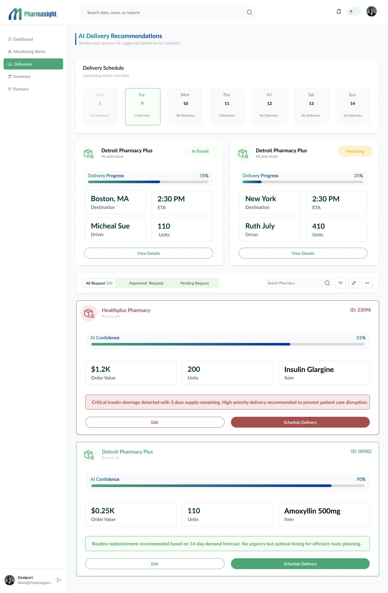
AI Delivery Recommendations — weekly schedule view, active tracking (Detroit 55% in transit, New York 25% preparing), all pending requests with AI confidence scores (81%–90%) and plain-language reasoning for each — designed so every recommendation can be explained to a pharmacy partner.
Each step is shown full-width below. Click any screen to open it at full size.
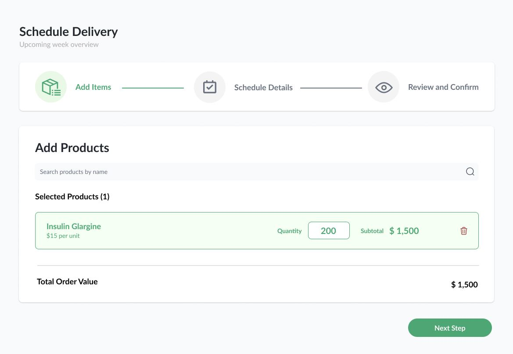
Search and add products. Insulin Glargine selected — 200 units at $15 each, subtotal $1,500. Total order value confirmed before proceeding.
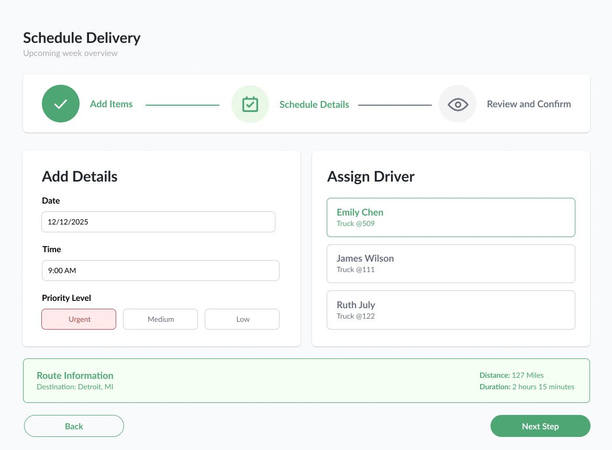
Date 12/12/2025 · Time 9:00 AM · Priority: Urgent. Driver assigned: Emily Chen, Truck @509. Route auto-surfaced: 127 miles · 2 hours 15 minutes.
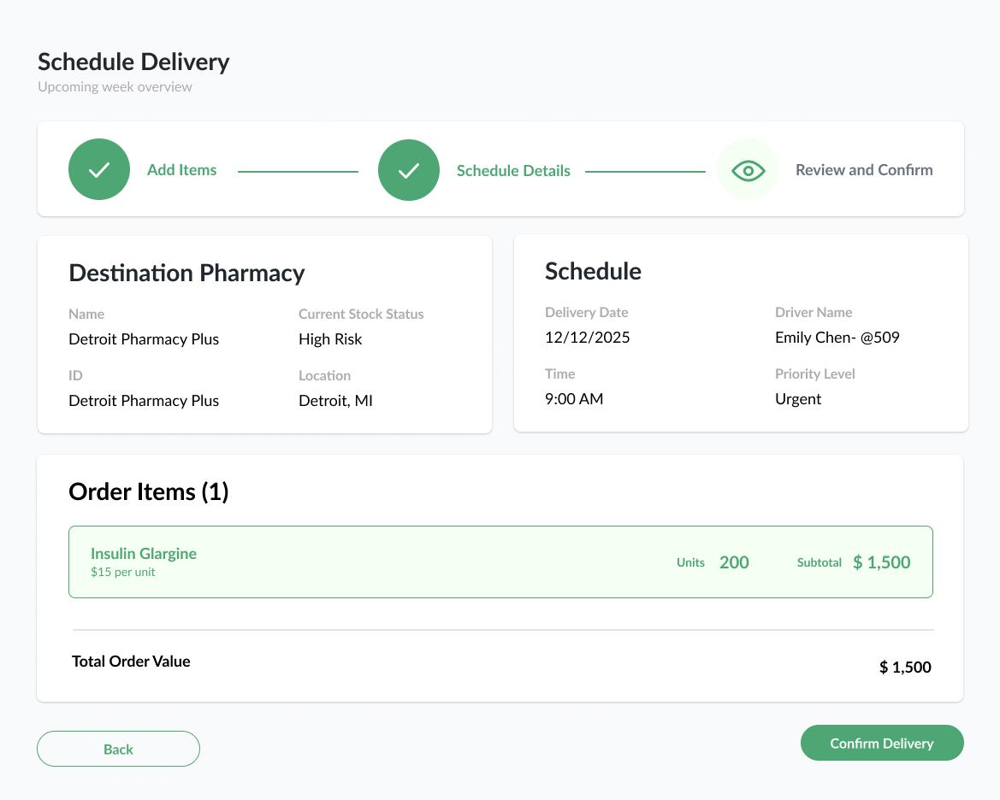
Full order summary — destination pharmacy (Detroit Pharmacy Plus · High Risk), driver, date, products, total $1,500. One final review before confirming a pharmaceutical delivery.
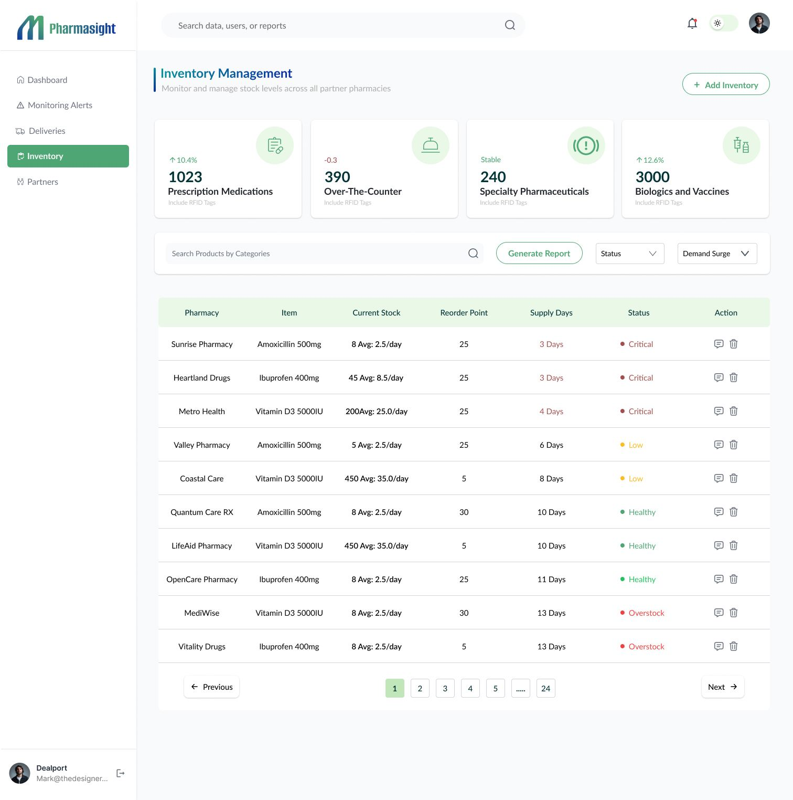
Network-wide stock across 1,023 prescription medications · 390 OTC · 240 speciality pharmaceuticals · 3,000 biologics and vaccines. Per-pharmacy status shows Critical / Low / Healthy / Overstock with supply days and reorder point — filterable by category and demand surge.
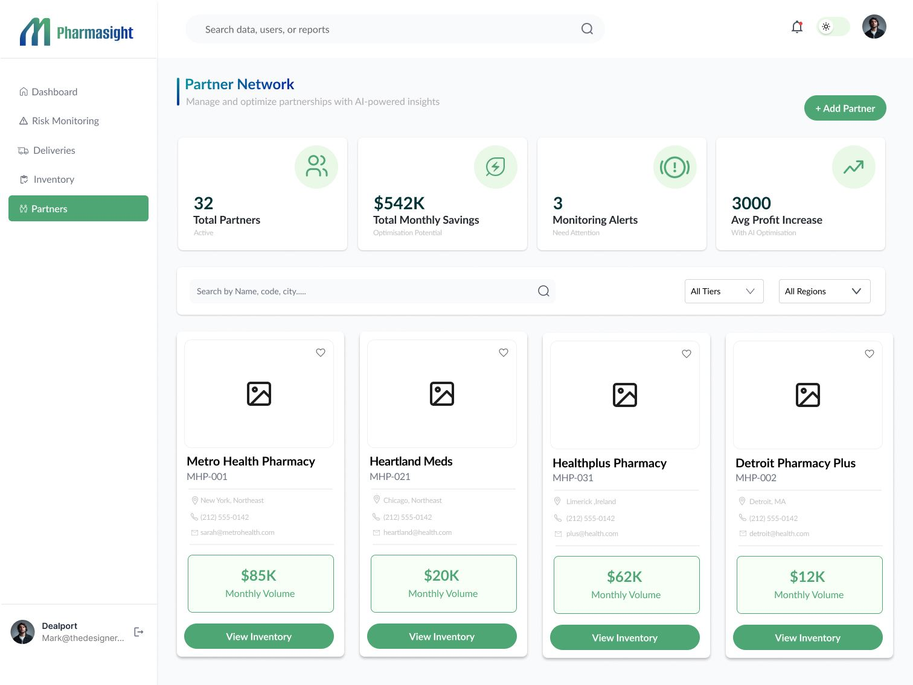
32 active pharmacy partners · $542K total monthly savings potential · 3 monitoring alerts needing attention · 3,000 avg profit increase with AI optimisation. Each partner card shows monthly volume and one-click inventory access.
5 research insights from 3 interviews directly shaped 5 design features, each validated through think-aloud testing. Operating at distribution level rather than single pharmacy level creates value across the entire network simultaneously.
The Pharmacy Supervisor identified critical stock issues using traffic light alerts without additional navigation matching her time constrained workflow. The Clinical Operations Manager engaged meaningfully with drill down analytics her current system couldn't provide. The Wholesale Coordinator confirmed AI confidence scoring gave her the language needed for partner conversations.